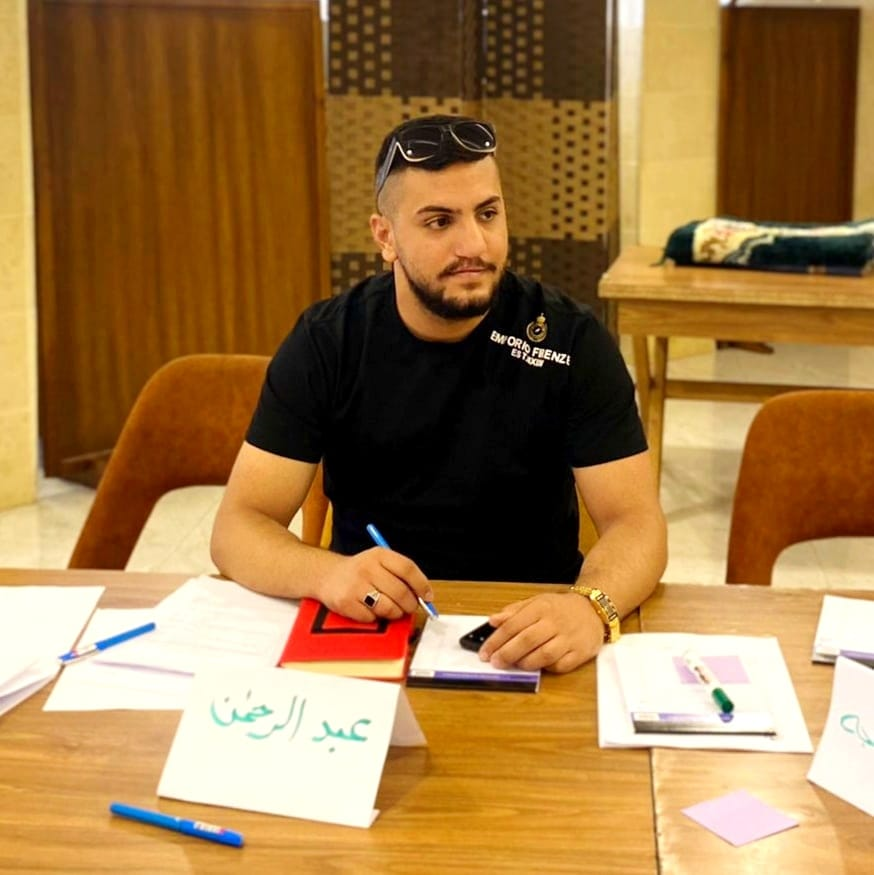

<p>Computer Science student from Palestine Technical University - Kadoorie, Al-Arroub Branch,
     I have a leadership personality and ambition in community development. I have participated in many volunteer and awareness initiatives,
      and I have experience in the fields of leadership, political participation and community issues.

       I work as a team leader in an initiative with the Women's Development and Media Foundation "TAM", 
       and I also participated in the "Takumi" initiative to integrate people with special needs into society.

    I have a passion for community development and volunteer work, as I have contributed to initiatives such as combating electronic blackmail and raising awareness among students in schools about this topic.
     I was hosted in a podcast to discuss the challenges facing young people in political participation, and I am currently leading an initiative aimed at combating electronic blackmail,
      where I plan and cooperate with official bodies and organize tasks for the work team.
    
    In addition, I have training experience and hold a trainer certificate,
     which makes me effective in providing guidance and support to the student community and youth, 
     and I help individuals discover themselves and achieve their personal and community development. </p>

     